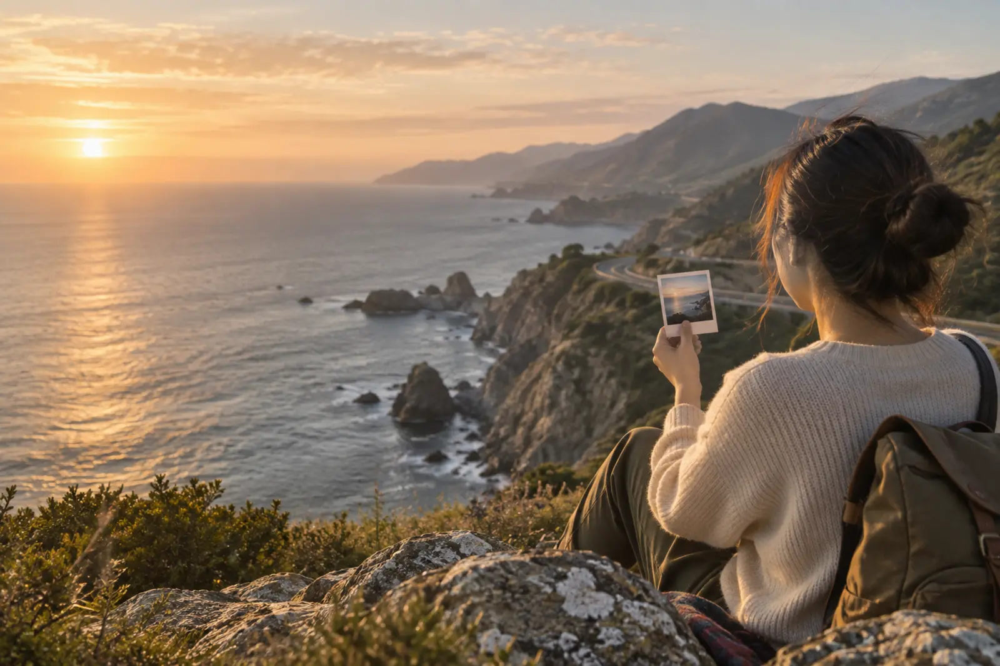

Choose your memories
Pick the photos, videos, and Live Photos that belong together.
Your life, mapped.
Oyomap turns the photos you already have into a private map-based journal—and cinematic stories of the places, moments, and people you choose.
No account. Your memories stay on your device.

Your story already happened
No check-ins to remember. No blank page to fill. Begin with the camera roll you already have.
Pick the photos, videos, and Live Photos that belong together.
Oyomap reconnects place and time, then carries you through the journey.
Add a few words, choose a mood, and save a film or a beautiful story card.
Cinematic by nature
Maps give every photo a sense of arrival. Oyomap moves between real places, then lets each moment breathe.
People, when they matter
Choose someone who was there and Oyomap can recut the memories around the places you shared. A friend, a partner, your family—or simply you.
Seattle · Vancouver · Kyoto
Private by design
Oyomap does not require an account or upload your photo library to an Oyomap server. Memory organization and face analysis happen on your device. Optional analytics only starts if you choose to share it.
Read the plain-language Privacy Policy →A private cinematic Memory Atlas
Oyomap for iPhone is preparing for launch.